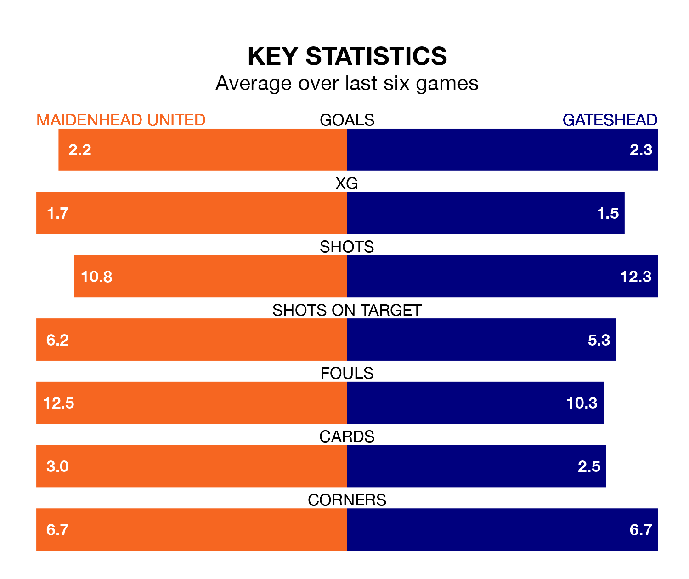

Gateshead are strong favourites to take all three points despite Maidenhead United's home advantage in Saturday's match at the York Road Stadium.
*Betting Company* are offering odds of 1.95 on Gateshead sealing the win, with the visitors sitting seventh in the National League table.
Maidenhead, who are 14th in the league and 14 points behind the Tynesiders, are priced at 3.1 to win. A draw is set at 3.5.
With 83 goals in 42 games so far this season, Gateshead are the league's third-highest scorers with 2.0 goals per game. And they are conceding fewer than average, letting in 59 goals at a rate of 1.4 per game.
Maidenhead, meanwhile, are below average scorers, with 1.3 goals per game, compared to a league average of 1.5. They have conceded 1.4 goals per game.
In the last 10 years, Maidenhead and Gateshead have played each other on seven occasions. Maidenhead won one of them and Gateshead the other.
On average, Maidenhead scored 0.4 goals and the Tynesiders 3.0 in those matches.
Their last meeting was on September 23, when Gateshead won 3-0 at home.
United are in mixed form in the National League, with three wins and a draw from their last six games.
With four wins and two losses over that period, the Tynesiders's form is slightly better – they have taken 12 points from 18, compared to the hosts' 10.
Maidenhead's last match was on Tuesday, a 3-1 win against Hartlepool United, with Casey Pettit, Sam Beckwith and Shaun McCoulsky getting the goals for Maidenhead.
Gateshead lost 2-0 against Fylde last time out, on Thursday.
Updated: 10:01 (UTC), 12/04/24